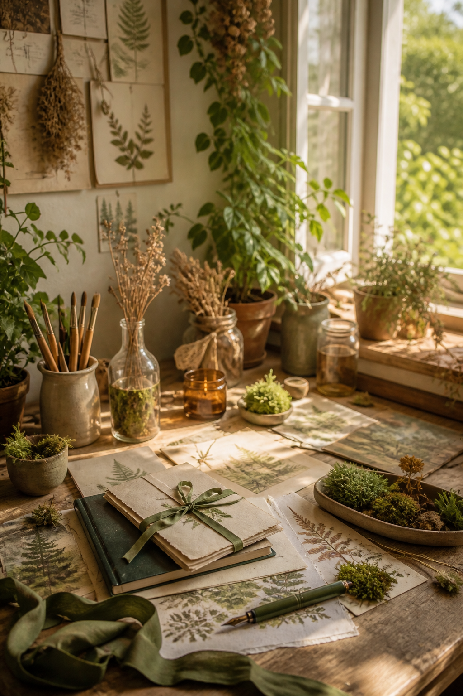
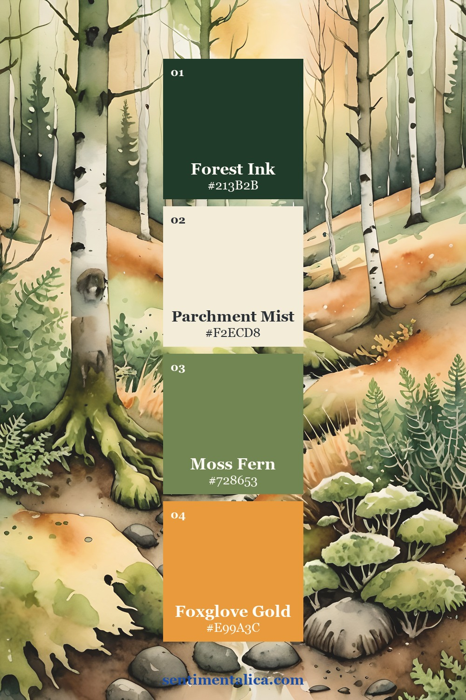
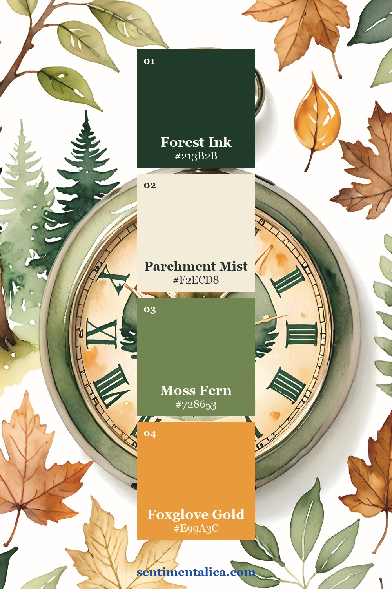
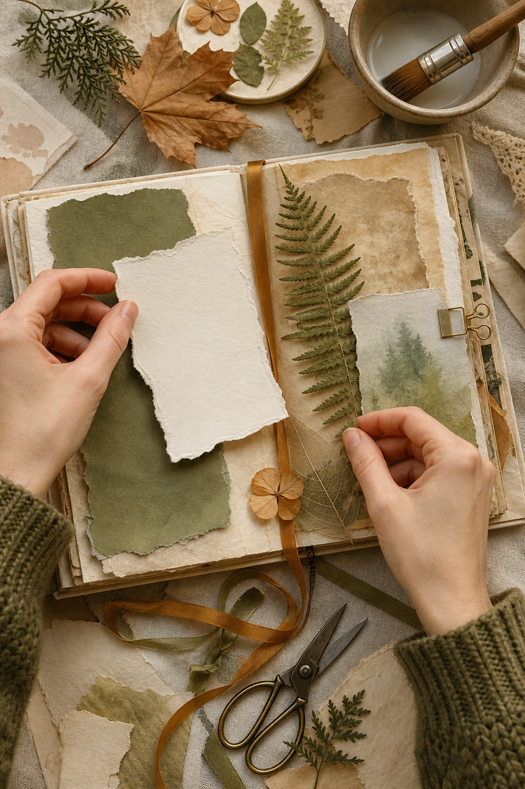
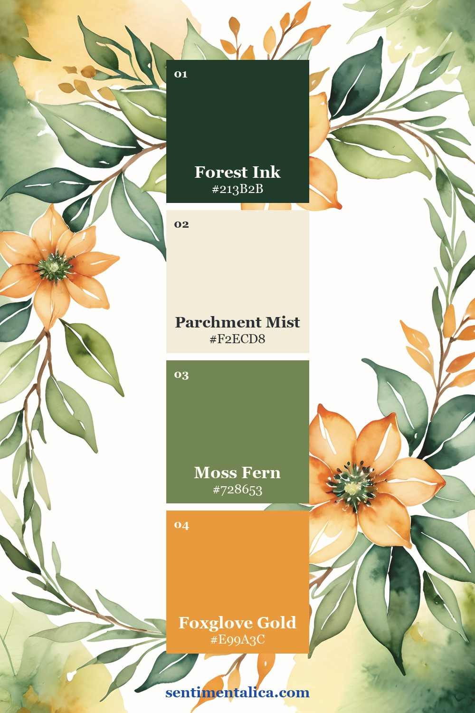
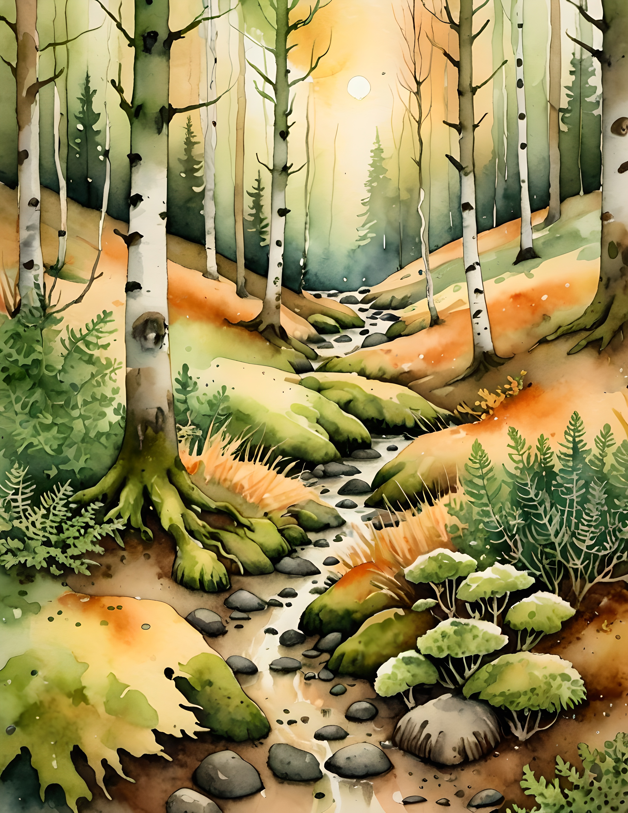
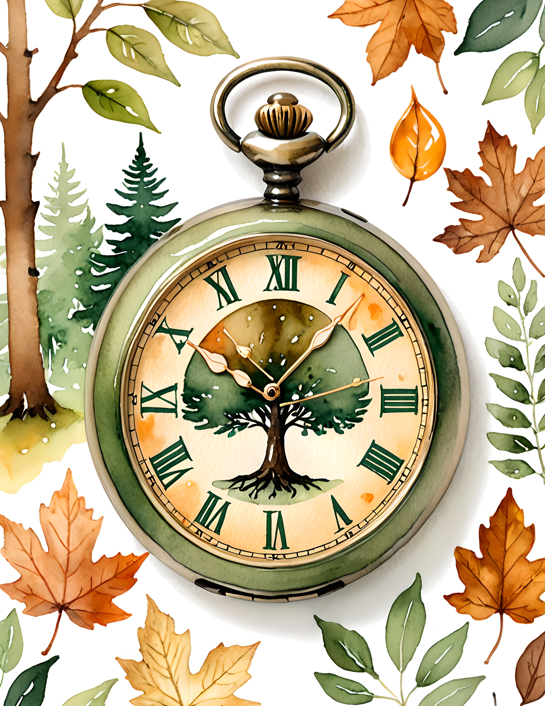
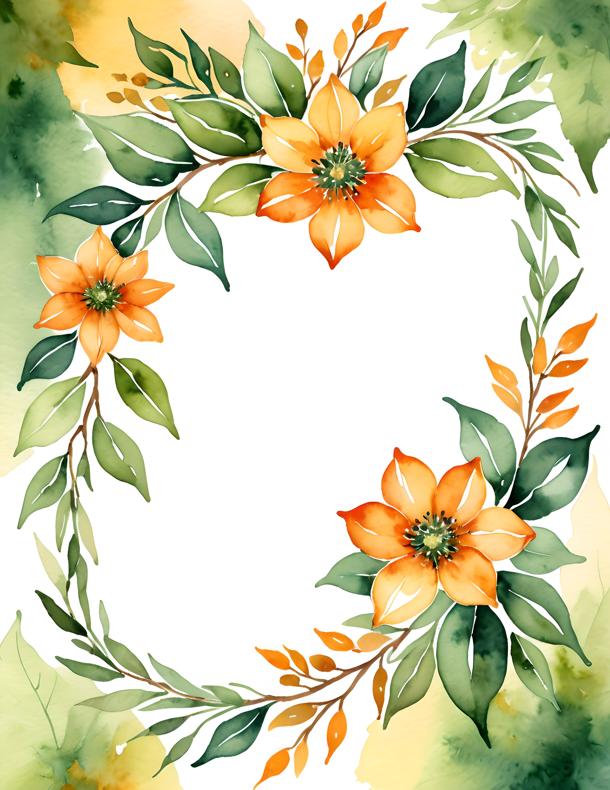

Woodland journal pages become convincing when the colors describe a place rather than simply repeating green. Think of the darkest tree shadow, pale paper caught in sunlight, moss on stone, and one amber leaf. Those four notes are enough to suggest an entire forest.

The Foxglove Hollow palette
Forest Ink is the anchor, Parchment Mist is the light neutral, Moss Fern is the supporting green, and Foxglove Gold is the accent. Use parchment generously. The blank warmth between botanical details is what makes the page feel like a quiet walk rather than a dense pattern book.

Build the page like a forest path
Start with one vertical dark element near an outer edge. Add a pale journaling card that creates a path toward the center. Place mossy greens on alternating sides so the eye moves through the spread. Finish with a single amber detail—a leaf, tab, ticket edge, or narrow ribbon.

Mix botanical shapes carefully
Fern fronds, tree silhouettes, and leaf skeletons have different rhythms. Choose one as the dominant shape and let the others remain small. If the page already has a detailed woodland illustration, pair it with plain torn paper instead of another busy botanical print.

Keep natural materials stable
Dry leaves and ferns completely before adding them. A fragile specimen can sit inside a translucent pocket or beneath a stitched strip rather than under heavy glue. If you prefer a flatter journal, echo the plant with watercolor imagery and save the real specimen for a removable envelope.

See the palette across the collection



A woodland spread you can finish today
Use one forest page, one torn parchment card, one fern, one strip of moss paper, and one amber tab. Write the location, weather, and one sound you remember. That small record turns a beautiful color scheme into a personal nature journal.
The Foxglove Hollow commercial-use watercolor image pack provides coordinated forest scenes and botanical details for backgrounds, pockets, and focal layers. Pair them with your own field notes and gathered textures for a page that still belongs to you.
Image note: Atmospheric and process visuals in this article were created with AI and curated by Sentimentalica. The displayed collection pages are authentic listing artwork.